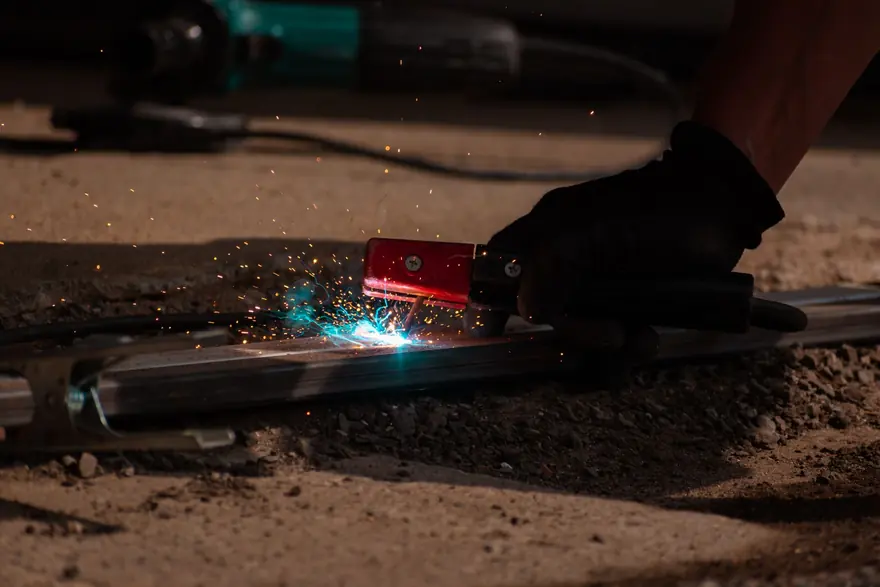
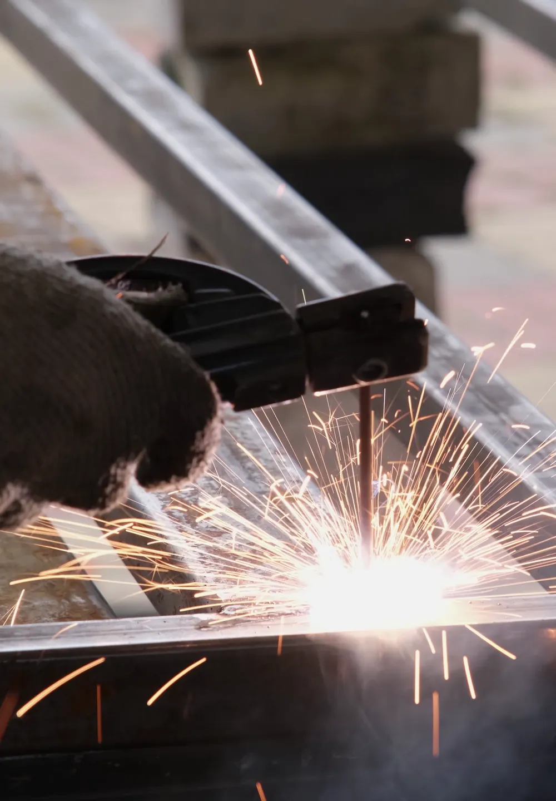

Homes
Fences, gates, iron railings and window frames repaired or built right where they stand.
Mobile welding · New Orleans and surrounding parishes
Our licensed and insured welders bring a fully equipped rig to your fence, gate, railing, pipe or trailer. No hauling heavy metal to a shop.
We offer on-site pipe, fence, gate, iron railing, window and specialized mobile welding, plus arc welding, custom welding and metal fabrication. Our licensed and insured welders bring the equipment to homes and businesses across New Orleans, so heavy metal never has to be hauled to a shop.

Pipe and pipeline repair on site, with stick and gas-shielded processes matched to the pipe.
View pipe welding →
Fence repairs and custom fence fabrication, with the material and process chosen for your fence.
View fence welding →
Gate repairs and custom gates in steel or aluminum, with materials and tools covered in your estimate.
View gate welding →
Custom indoor and outdoor railings for stairways, decks and balconies, built to fit your property.
View railing welding →
Repair work at your home or office and custom metal pieces, whatever the size of the project.
View specialized welding →
Repairs for rusted and worn metal window frames, carried out at your home.
View window welding →
Shielded and non-shielded arc welding for commercial and residential customers.
View arc welding →
Custom ironwork, estimated before we start so we arrive with the right equipment for the job.
View custom welding →
Fabrication of all types of metal for residential, commercial and industrial settings.
View metal fabrication →It takes five steps. You request a free quote, we schedule a time that suits you, our welders arrive with every tool and do the work on site, we walk you through the finished job, and we stay one call away for any follow-up adjustments.
Reach us through our website, by phone or by email, and tell us about the repair or custom fabrication. You get a free, no-obligation quote tailored to the project.
Once you approve the quote, we book a time that is convenient for you. Appointments are flexible.
Our licensed and insured welders come to your location with all the tools and equipment, so nothing heavy has to be moved.
We walk you through the finished work to make sure it meets your expectations, then finalize with easy payment options.
We stand by our work. If you need an adjustment or more help, our team is a call away.
 The rig comes to you
The rig comes to youWe weld for homeowners, businesses and industrial sites. Our team handles residential and commercial projects, and our fabricators work with all types of metal in industrial settings too. No job is too big or too small, from a single gate hinge to a full custom fabrication.
Fences, gates, iron railings and window frames repaired or built right where they stand.

Repairs and fabrication for commercial properties, done on site so downtime stays low.

Pipe welding, pipeline repair and metal fabrication for industrial settings.

Our welders bring over 20 years of experience, carry licenses and insurance, and arrive in fully equipped mobile units. Estimates are free, pricing is transparent with no hidden fees, and we stand behind every job with follow-up support across New Orleans and nearby parishes.
Our licensed, insured and highly trained welders handle simple repairs and complex custom fabrications, and aim to get it right the first time.
Our fully equipped mobile welding units tackle the project on site, for minimal downtime and maximum convenience.
We offer free estimates on all our services, so you always know what to expect, with no surprise costs.
We serve New Orleans and nearby areas like Covington, Mandeville and Metairie, wherever the job is.
Customers mention fast turnarounds, solid workmanship and fair prices. Homeowners who needed railings and gates welded say the work was quick and top notch, and others call us reliable, professional and affordable for jobs at their homes, businesses and vehicles.
Big Easy Mobile Welders provide quality welding work at a reasonable price. They have been reliable and quick to respond whenever I've needed them.
They came to my house and welded two iron railings with a quick turnaround time, which was just what I needed. The quality of workmanship is top notch.
They helped me out of a jam by welding our gate, and their work is amazing. The fast service combined with great quality made all the difference.
They are not only professional and skilled, but also very affordable! I highly recommend them for any welding job on your property or vehicle.
Our blog answers the questions we hear on job sites around New Orleans: how humidity and salt air rust welded steel, what dockside welding involves, and when aluminum or steel suits a project better. Start with these three guides, or browse the full blog.
Why humidity and salt air push unprotected welded steel toward rust, and what slows it down.
Read the guide →
How welding keeps docks, seawalls, pilings and boat lifts sound in a splash zone.
Read the guide →
How the two metals weld differently, and which jobs each one suits.
Read the guide →We serve New Orleans and 11 nearby cities: Metairie, Kenner, Gretna, St. Rose, LaPlace, Slidell, Mandeville, Covington, Madisonville, Hammond and Baton Rouge. Our mobile units drive to your property in any of them, so you get the same on-site welding service wherever the job is.
Not sure we cover your street?
Request a free estimate or call us, and we will confirm before we book the job.
Where Our Rigs Roll
Schematic, not to scale. New Orleans and the 11 nearby cities we serve.
Straight answers to what New Orleans homeowners and businesses ask us most before they book a mobile welder.
Yes. Our mobile welders bring a fully equipped unit to your home or business anywhere in our New Orleans service area. Gates, fences, railings, pipes and frames get welded where they stand, so there is no hauling heavy material to a shop.
Yes. Our team of welders is licensed, insured and highly trained. We handle everything from simple repairs to complex custom fabrications, and we bring the same standard to every job, large or small.
It depends on the job, so we start with a free, no-obligation estimate tailored to your project. Our pricing is transparent with no hidden fees, which means you know what to expect before any work begins.
Most metalwork at a home or business: pipes, fences, gates, iron railings, window frames and custom metal pieces. We also handle shielded and non-shielded arc welding, custom welding and metal fabrication for residential, commercial and industrial customers.
Request a free quote through our website, by phone at (504) 370-2757 or by email. Once you approve the quote, we schedule a time that is convenient for you, and our welders arrive with all the tools the job needs.
We serve New Orleans plus Metairie, Kenner, Gretna, St. Rose, LaPlace, Slidell, Mandeville, Covington, Madisonville, Hammond and Baton Rouge. Each city has its own page on our site with more detail about local service.
Mobile welding comes to you. We bring the equipment to where the work is, so heavy materials stay put and downtime stays low. Shop welding means removing the piece and taking it to a fixed workshop, then bringing it back.
After the work is finished, we walk you through it to make sure it meets your expectations. Once you are satisfied, we provide easy payment options to finalize the service, and our team stays a call away for follow-up.


Tell us what needs welding, and we will bring the rig to your door anywhere in the New Orleans area.